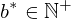
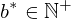
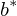
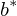
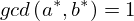

Show the Proof¶
In [1]:
import proveit
# Automation is not needed when only showing a stored proof:
proveit.defaults.automation = False # This will speed things up.
proveit.defaults.inline_pngs = False # Makes files smaller.
%show_proof
Out[1]:
| step type | requirements | statement | ||
|---|---|---|---|---|
| 0 | instantiation | 1, 2, 3 |  , , , ,  ⊢ ⊢ | |
 : :  | ||||
| 1 | instantiation | 4, 5, 6, 7 | , , ⊢ | |
 : :  , ,  :  :  | ||||
| 2 | theorem | ⊢  | ||
| proveit.numbers.numerals.decimals.posnat2 | ||||
| 3 | theorem | ⊢  | ||
| proveit.numbers.numerals.decimals.less_1_2 | ||||
| 4 | theorem | ⊢  | ||
| proveit.numbers.divisibility.GCD_one_def | ||||
| 5 | assumption | ⊢ | ||
| 6 | assumption | ⊢ | ||
| 7 | instantiation | 8, 9 | ⊢  | |
 : :  , ,  : : | ||||
| 8 | theorem | ⊢  | ||
| proveit.logic.booleans.conjunction.right_from_and | ||||
| 9 | assumption | ⊢ | ||